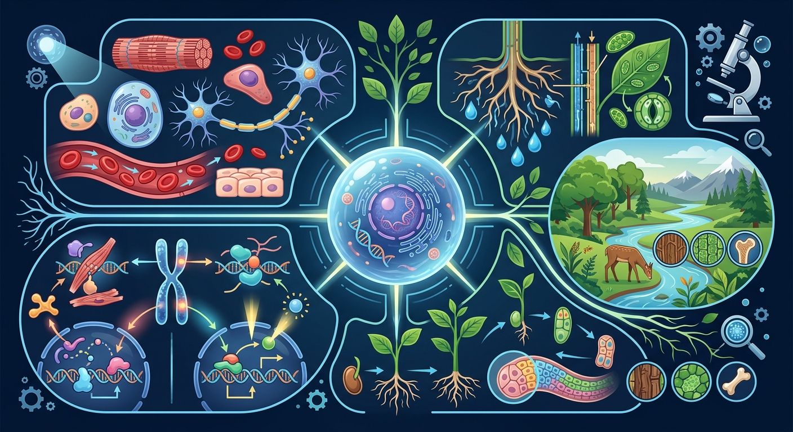

正在打开课件，请稍候…
正在打开课件，请稍候…

开始新课之前先花一分钟自评起点，前测不计分，它告诉 AI 学伴从哪里帮你最有效。
1. 你能用自己的话解释「细胞分裂」讲的是什么吗？
2. 你能在生活中举出一个与「细胞分裂」相关的例子吗？
And：学生知道细胞是生命的基本单位
But：不清楚细胞如何一分为二
Therefore：理解生长繁殖的基础
细胞分裂分为间期和分裂期。间期细胞会增长（如肝细胞从10μm增大到20μm），并复制DNA；分裂期又分前期（染色体出现）、中期（排队）、后期（分开）和末期（分家）。比如洋葱根尖细胞分裂时，20条染色体会平均分到两个新细胞。
🌍 手指被纸划伤后，伤口周围的皮肤细胞会通过分裂修补伤口，大约3天就能愈合。这就是细胞分裂在生活中的体现。
细胞分裂过程中，染色体在哪一阶段完成复制？
细胞分化是指同一来源的细胞逐渐产生形态结构、生理功能和蛋白质合成上的差异的过程。例如，受精卵通过不断分裂和分化，最终形成具有不同功能的细胞，如肌肉细胞、神经细胞和血细胞等。这些细胞虽然来源于同一个受精卵，但它们的形状、大小和功能却各不相同。分化的本质是基因的选择性表达，即不同细胞中激活的基因组合不同。例如，红细胞中表达血红蛋白基因，而肌肉细胞中表达肌动蛋白和肌球蛋白基因。这种差异使得细胞能够执行特定的功能，共同维持生物体的正常运作。
细胞分化具有三个主要特点：稳定性、不可逆性和时空性。稳定性指的是分化后的细胞会保持其特定的形态和功能，例如神经细胞一旦分化完成，就会长期保持传递神经冲动的能力。不可逆性是指分化过程通常是单向的，已经分化的细胞一般不会回到未分化状态。例如，成熟的植物筛管细胞失去细胞核后无法再恢复。时空性则是指细胞分化在时间和空间上受到精确调控。例如，在胚胎发育过程中，不同部位的细胞会在特定时间分化为不同组织。这些特点共同保证了生物体结构的复杂性和功能的多样性。
细胞分化的分子基础在于基因的选择性表达。虽然所有细胞都含有相同的遗传信息，但只有部分基因在特定细胞中被激活。这种调控主要通过转录因子实现。例如，在肌肉细胞分化过程中，MyoD蛋白作为关键转录因子，激活肌肉特异性基因的表达。表观遗传修饰也起着重要作用，如DNA甲基化和组蛋白修饰可以长期关闭某些基因。例如，X染色体失活就是通过DNA甲基化实现的。此外，microRNA等非编码RNA也参与调控分化过程。这些分子机制共同决定了细胞的命运，使多细胞生物能够形成复杂的组织结构。
细胞分裂和分化是两个密切相关但又不同的过程。细胞分裂增加细胞数量，而细胞分化增加细胞种类。例如，在人体发育过程中，受精卵首先通过快速分裂增加细胞数量，然后这些细胞逐渐分化为各种组织细胞。值得注意的是，并非所有细胞都能无限分裂和分化。例如，哺乳动物的红细胞成熟后会失去细胞核，无法继续分裂。干细胞则具有特殊的性质，既能自我更新（分裂），又能分化为特定细胞。例如，造血干细胞可以分化为各种血细胞。理解这两者的关系对于认识生物发育和组织再生至关重要。
植物细胞分化具有一些独特的特点。首先，植物细胞保持较高的全能性，即已分化的细胞在适当条件下可以脱分化并再生完整植株。例如，胡萝卜的韧皮部细胞在培养基中可以再生出完整植株。其次，植物细胞分化受植物激素的强烈影响。例如，生长素和细胞分裂素的比例决定愈伤组织分化为根还是芽。此外，环境因素如光照对植物细胞分化也有显著影响。例如，黑暗中生长的幼苗会形成黄化的茎，而光照下则形成正常的绿色组织。这些特点使植物在适应环境和无性繁殖方面具有独特优势。
细胞分化异常会导致多种疾病。癌症是最典型的例子，其特征之一就是细胞分化受阻，导致未成熟细胞无限增殖。例如，白血病就是造血细胞分化异常的结果。某些先天性疾病也与分化异常有关，如神经管缺陷就是胚胎时期神经管细胞分化异常导致的。此外，组织纤维化可以看作是细胞异常分化的结果，如肝纤维化中肝星状细胞异常分化为肌成纤维细胞。了解这些疾病与细胞分化的关系，不仅有助于认识疾病机制，也为治疗提供了新思路，如诱导分化疗法就是通过促进癌细胞分化来治疗癌症。
干细胞是具有自我更新能力和多向分化潜能的特殊细胞。根据分化潜能，干细胞可分为全能干细胞（如受精卵）、多能干细胞（如胚胎干细胞）和专能干细胞（如造血干细胞）。例如，胚胎干细胞可以分化为人体所有细胞类型，而造血干细胞只能分化为各种血细胞。干细胞的分化受微环境和信号分子的严格调控。例如，骨髓中的造血干细胞在特定细胞因子作用下可分化为红细胞或白细胞。干细胞研究不仅有助于理解细胞分化机制，在再生医学和组织工程中也有广阔应用前景，如用于治疗帕金森病的多巴胺神经元移植。
细胞分化知识在多个领域有重要应用。在医学上，诱导多能干细胞技术可以将成体细胞重编程为干细胞，再分化为所需细胞类型用于治疗。例如，用患者皮肤细胞培养视网膜细胞治疗黄斑变性。在农业上，利用植物细胞全能性进行组织培养快速繁殖优良品种，如兰花的大规模无性繁殖。在生物制造中，通过控制细胞分化生产特定产物，如用CHO细胞生产治疗性抗体。此外，研究癌细胞分化机制有助于开发新的抗癌药物。这些应用展示了细胞分化研究的重要价值，也推动了相关技术的快速发展。
细胞分化是生物体发育过程中细胞逐渐特化的过程，这一过程受到多种分子机制的调控。其中，转录因子在这一过程中起着至关重要的作用。转录因子是一类能够与DNA结合并调控基因表达的蛋白质。例如，在胚胎发育过程中，转录因子Pax6在眼睛的形成中起到关键作用。Pax6基因的突变会导致眼睛发育异常，甚至失明。此外，表观遗传学调控也是细胞分化的重要机制。DNA甲基化和组蛋白修饰等表观遗传变化可以影响基因的表达，从而决定细胞的分化方向。例如，在干细胞向神经细胞分化的过程中，某些基因的甲基化状态会发生改变，导致这些基因的表达被抑制，从而促使细胞向神经细胞方向分化。
细胞分化在再生医学中具有广泛的应用前景。再生医学旨在通过刺激机体自身的修复机制或通过移植细胞、组织或器官来修复或替换受损的组织和器官。干细胞，特别是多能干细胞，因其具有分化为体内几乎所有类型细胞的潜力，成为再生医学研究的热点。例如，科学家们已经成功将干细胞分化为胰岛β细胞，用于治疗糖尿病。此外，诱导多能干细胞（iPSCs）技术的发明，使得科学家能够将成年细胞重编程为多能干细胞，这些细胞可以进一步分化为所需的细胞类型，用于疾病模型的建立和药物筛选。例如，利用iPSCs技术，科学家们可以将皮肤细胞重编程为心肌细胞，用于研究心脏病的发病机制和开发新的治疗方法。细胞分化研究为再生医学提供了强大的工具，有望在未来实现更多疾病的治愈。
设计实验探究10℃/25℃/40℃环境下细胞分裂速度差异
识别：说出「细胞分裂」中最重要的三个关键词，并写出它们的含义。
解释与比较：解释「细胞分裂」的核心结论，比较它与一个相近概念的区别。
运用与计算：把结论代入一个具体例子，求出结果或做出判断。
设计与创造：设计一个新情境，验证这个结论是否依然成立，并说明理由。
把你对「细胞分裂」的理解画下来：标注关键词、画出结构关系，再对照讲解检查。
设计一个实验探究环境因素（如温度或光照）对植物细胞分化的影响。要求包括实验目的、假设、材料、步骤和预期结果。分析不同条件下植物组织可能出现的分化差异及其生物学意义。
先独立作答，再点选项查看对错与错因。
伤口愈合时，新细胞主要通过什么过程产生？
显微镜下观察细胞分裂，最能说明该过程特征的阶段是？
与洋葱根尖细胞相比，人体伤口处细胞分裂的特点是？
细胞分裂时，____先复制再平均分配到两个子细胞中。
答案：染色体
遗传物质通过染色体复制传递
伤口愈合过程中，新细胞与原有细胞的遗传物质____。
答案：相同
有丝分裂保持遗传稳定性
对照前测，用三级任务检验自己的成长。能完成 Level 2 以上，说明你真的学会了。
Level 1 基础巩固 ⭐（识别与理解）：用自己的话解释「细胞分裂」的核心结论，并说出它成立的条件。
Level 2 能力应用 ⭐⭐（应用与分析）：比较「细胞分裂」与一个相近概念，说明它们的区别；或把它代入一个新例子做出判断。
Level 3 迁移挑战 ⭐⭐⭐（评价与创造）：设计一道以真实生活为情境的「细胞分裂」小考题，考考同桌或 AI 学伴。
类比记忆：把「细胞分裂」想象成你熟悉的一件东西或一个场景——就像给新知识找一个老朋友。写下你的类比，交给 AI 学伴帮你检查贴不贴切。
口诀挑战：试着把本课最容易忘的三个要点缩成一句不超过 15 字的口诀，顺口、好记、不漏关键条件。
💡 分裂前后遗传信息如何保持。
开放任务：用三步写出你如何向同学讲清「细胞分裂」。